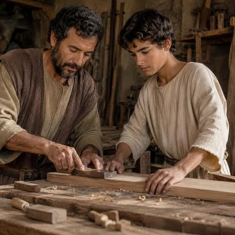

Uno de los mayores enigmas de la biografía de Jesús es, paradójicamente, el período más largo de su vida. Los evangelios canónicos lo muestran siendo un niño de doce años dialogando con los maestros del Templo de Jerusalén (Lucas 2:41-52), para hacerlo desaparecer por completo del relato y reaparecer alrededor de los treinta años, cuando es bautizado por Juan el Bautista (Lucas 3:21-23). Son aproximadamente veinte años, de los que no existe ninguna información.


Los evangelios apócrifos intentaron llenar ese vacío, narrando anécdotas del niño Jesús haciendo travesuras con sus poderes mágicos: devolviendo la vida a un pollo asado en un banquete, estrangulando pajaritos para después resucitarlos, cambiando el curso de un arroyo con su voz, formando pájaros con arcilla para darles vida, o curando mordeduras de víbora soplando el lugar donde entraron los colmillos. Se trata de leyendas que menciona el filósofo francés Michel Onfray (n. en 1959) en su «Tratado de ateología», y que provienen principalmente del «Evangelio de la infancia de Tomás» y otras asociadas al «Evangelio de Nicodemo» (o textos coptos y etíopes tardíos como el «Libro del Gallo»). Pero que obviamente, carecen de historicidad.
Sobre este vacío histórico de dos décadas se han formulado diversas hipótesis, aunque siempre es necesario distinguir entre lo probable y lo puramente especulativo. Sin embargo, la explicación más sencilla es también la más probable: que Jesús llevó una vida completamente normal, creciendo en Nazaret junto a José, María, sus cuatro hermanos y al menos dos hermanas, conviviendo o relacionándose en ese período con otros parientes, como Juan (posteriormente «el bautista»), hijo de Isabel, prima (o pariente) de María (Lucas 1:36). Se ha especulado que Juan, quien tendría la misma edad de Jesús (con meses de diferencia), pudo haberle hablado sobre los esenios, secta con la cual tendría afinidad. Aunque obviamente, no existe evidencia de nada de esto.
Como cualquier galileo humilde, probablemente Jesús aprendió de su padrastro José el oficio de «tekton» (τέκτων), palabra griega que puede significar carpintero, constructor o artesano, siendo razonable pensar que trabajó durante buena parte de su juventud para ganarse la vida y ayudar a su familia, sin realizar nada que llamara especialmente la atención.
Otro aspecto discutido es si Jesús estuvo casado. Los evangelios simplemente no mencionan ninguna esposa, pero era común entre los judíos del siglo I no mencionar a las mujeres en general. Pero tampoco se afirma que fuera célibe, lo cual era muy improbable en la sociedad judía, donde el matrimonio era la norma e incluso un mandato divino (Génesis 1:27-28). Aunque hay quienes prefieren creer que permaneció soltero por motivos religiosos, recordando su referencia a los «eunucos por causa del reino de los cielos» (Mateo 19:12). Incluso se ha llegado a insinuar que en cierta etapa de su vida Jesús fue nazareo, alguien consagrado a Yahvé que hacía voto de ascetismo, llevando una vida penitente y austera, sin consumir vino ni sidra, y dejándose crecer el cabello, según lo indicado en Números 6:2-5.
El ex sacerdote católico y biblista estadounidense John P. Meier (1942-2022), sostenía que el silencio de las fuentes probablemente significa algo muy simple: que antes de comenzar su actividad pública, Jesús no hizo nada extraordinario. Y de forma semejante, el historiador judío húngaro Géza Vermes (1924-2013), describe a Jesús como un judío plenamente integrado a la vida religiosa de Galilea, dedicado a trabajar, asistir a la sinagoga y estudiar las Escrituras.
Los evangelios muestran que cuando Jesús comienza a predicar, ya tenía un amplio conocimiento bíblico, apareciendo un Sabbat en la sinagoga de «su tierra» leyendo un rollo de las Escrituras que le entregó el líder o «principal», y lo hizo sin problema, a pesar de estar escrito en hebreo, siendo el arameo su lengua materna y de los demás asistentes. Pero además también lo explicó, lo cual impresionó a los presentes, probablemente todos analfabetas, por lo que comenzaron a preguntarse de dónde sacaba Jesús aquel conocimiento, tratándose tan sólo del hijo del carpintero José y de María, y hermano de Jacob, José, Judas y Simón, además de al menos dos innombradas mujeres (Marcos 6:2-3, Mateo 13:54-55, Lucas 4:16-22). Resulta evidente pues, que Jesús debió dedicar varios años al estudio de los textos judaicos.
Durante esas dos décadas de su vida, Jesús tuvo que continuar participando en las festividades religiosas judaicas, tal como lo hacía con su familia cuando era niño, peregrinando más de cien kilómetros desde Galilea hasta Jerusalén. Como todo varón de su comunidad, estaba obligado a participar al menos en las tres celebraciones anuales principales (Deuteronomio 16:16-17). Y esas visitas le habrían permitido conocer de primera mano el funcionamiento del Templo, así como las tensiones sociales y religiosas de Judea.
Con frecuencia se ha especulado que Jesús viajó durante esos años a la India, el Tíbet o Egipto; sin embargo, no existe absolutamente ninguna evidencia histórica que respalde tales hipótesis. El filólogo e historiador agnóstico español Antonio Piñero (n. en 1941), considera mucho más probable que Jesús conociera distintas regiones del Oriente Medio, e incluso ciudades helenizadas como Séforis, situada a escasos kilómetros de Nazaret, pero rechaza cualquier supuesta «formación espiritual» de Jesús en países orientales.
También se ha sugerido una posible relación de Jesús con los esenios de Qumrán, debido a ciertas similitudes doctrinales. Sin embargo, los esenios eran extremadamente rigoristas en la observancia de la Ley, mientras que los evangelios presentan a Jesús criticando precisamente el legalismo religioso.
Es interesante mencionar por otra parte, que durante esta etapa Jesús habría vivido en un ambiente profundamente religioso y supersticioso, lleno de profetas, exorcistas, curanderos y predicadores apocalípticos, donde los cultos a Mitra, Isis, Zeus, Baal y otras divinidades, coexistían con el judaísmo, por lo que su formación religiosa no surgió en un vacío cultural.
En este contexto, el filólogo y teólogo ateo estadounidense Bart D. Ehrman (n. en 1955), sostiene que Jesús fue otro predicador judío apocalíptico más, convencido de que «Dios» intervendría muy pronto para instaurar su Reino. Pero en contraste, el historiador Richard Carrier (n. en 1969) y el teólogo Robert M. Price (n. en 1954), ambos ateos y estadounidenses, opinan que Jesús ni siquiera existió, y que ese prolongado silencio biográfico es más bien otra evidencia de que los evangelios son construcciones teológicas. Esta postura, sin embargo, continúa siendo minoritaria dentro de la investigación académica, aunque recordemos que no necesariamente la mayoría tiene la razón.
En definitiva, ninguna fuente antigua permite reconstruir esos veinte años perdidos de la vida de Jesús, siendo paradójico que el personaje que dio origen a una de las religiones más exitosas del planeta, permanece completamente invisible durante casi dos tercios de su vida, lo cual es también una prueba más de que los evangelios fueron escritos con la única intención de divulgar una creencia religiosa, y no para satisfacer la curiosidad académica de los historiadores.
[Godless Freeman]
Comentarios
Comments powered by Disqus